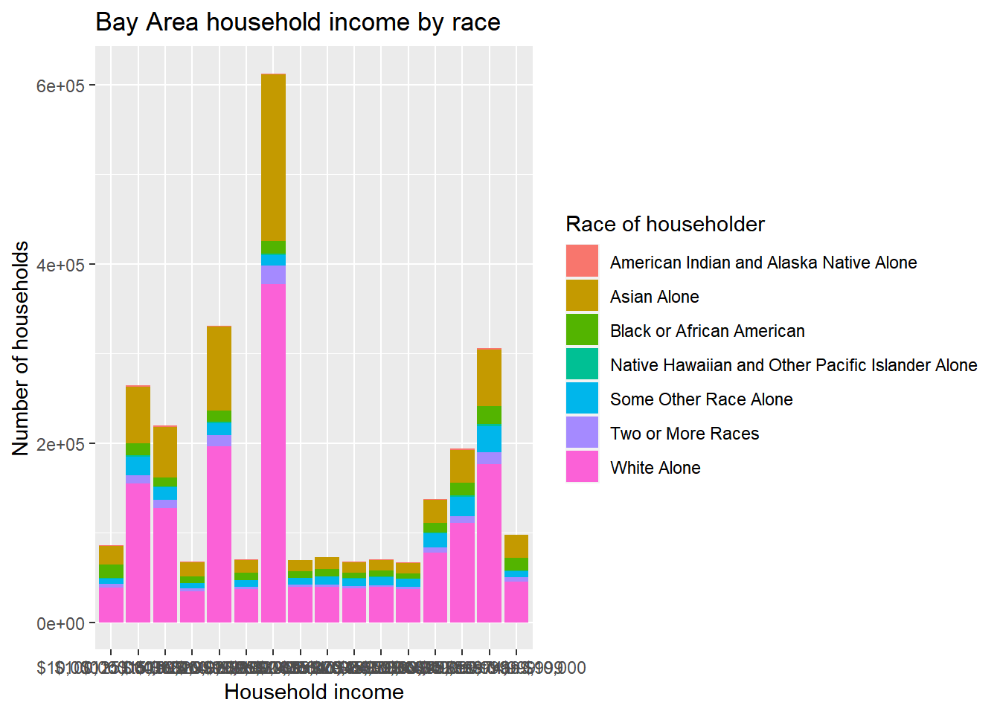
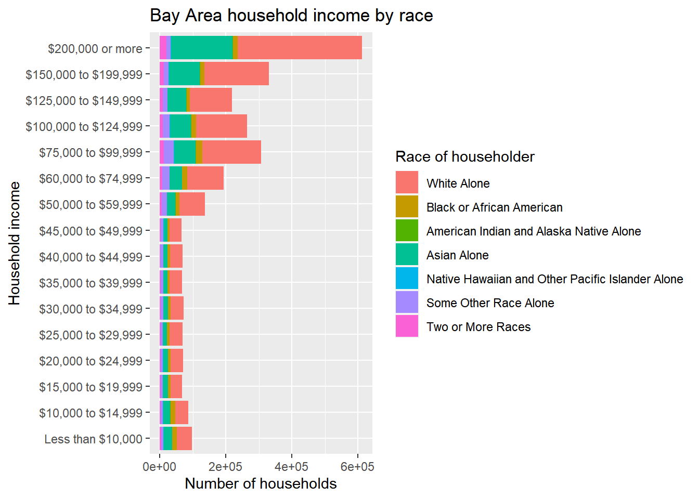
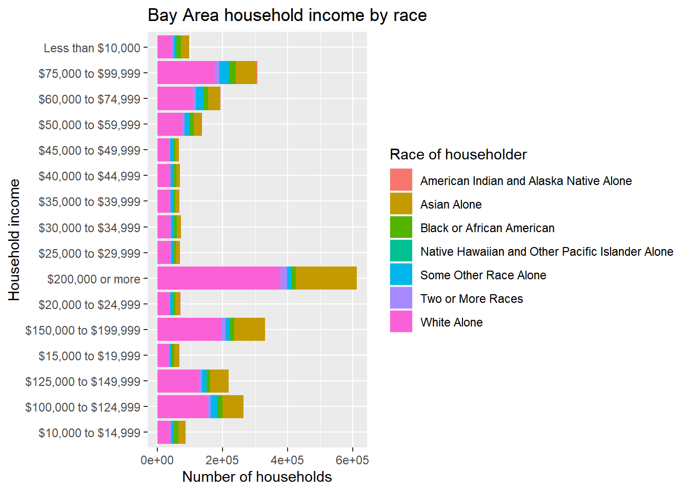

3.4 Sampling bias
In this section, we’ll use what we’ve learned so far about regression analysis in a brief digression into the topic of sampling bias. Specifically, for all of the sources of data available to us in urban data analytics, a key question we should have before using the data is whether the population samples provided in the data are sufficiently “representative” of the population. If not, then our analysis may lead to distorted understandings of the populations we care about. Our worry here goes beyond the general uncertainty we always have about samples vs. populations, and specifically targets ways in which unique data-sampling methods can systematically introduce bias.
A good test case for this kind of evaluation is mobile device location data. A few different companies specialize in collecting this type of data, anonymizing it for privacy purposes, and making it available for everything from advertising to COVID-19 research. One particular company, Safegraph, is particularly accessible, so we can easily download sample data and investigate it for bias. Specifically, one of its products is called Neighborhood Patterns and has June 2020 data at the CBG level available for download. Go ahead and follow the link above to download the file; you will have to provide an email address and then download a Google Drive file called “Neighborhood_Patterns_June_2020.zip”. When you unzip that file on your computer, you will find two files, one of which is called “home_panel_summary.gz” which is described here. This can be loaded using read_csv(). In fact, this is more like “metadata” as it just includes, for each census_block_group, a measure called number_devices_residing, which is the “number of distinct devices observed with a primary nighttime location in the specified census block group”. For our purposes, we can ignore the actual substance of the neighborhood patterns data in the other file, which provides many rich insights about foot traffic, and focus on some higher-level questions: How does number_devices_residing relate to CBG population, how does that “coverage rate” vary across the Bay Area, and does it have any relationship with underlying community characteristics, like percent elderly population? In other words, is there evidence that CBGs with more seniors have lower coverage rate in the Safegraph data, which may mean that there is a systematic undercounting of the mobility patterns of seniors, which could affect efforts to specifically understand the mobility patterns of seniors?
The code below assumes that “home_panel_summary.gz” is in the working directory; if you have stored it somewhere else, you would adjust the file path accordingly.
library(tigris)
library(tidyverse)
library(censusapi)
library(sf)
library(leaflet)
Sys.setenv(CENSUS_KEY="c8aa67e4086b4b5ce3a8717f59faa9a28f611dab")
acs_vars_2018_5yr <-
listCensusMetadata(
name = "2018/acs/acs5",
type = "variables"
)
home_panel_summary <- read_csv("home_panel_summary.gz")Next, we filter to just the Bay Area CBGs:
bay_county_names <-
c(
"Alameda",
"Contra Costa",
"Marin",
"Napa",
"San Francisco",
"San Mateo",
"Santa Clara",
"Solano",
"Sonoma"
)
bay_cbgs <-
block_groups("CA", bay_county_names, cb = T, progress_bar = F) %>%
filter(COUNTYFP %in% bay_counties$COUNTYFP)
bay_area_devices <-
home_panel_summary %>%
filter(census_block_group %in% bay_cbgs$GEOID) %>%
select(
census_block_group,
number_devices_residing
)Next, we use censusapi to load population counts for each CBG in the Bay Area, join that Census data to our Safegraph data using right_join() (which retains just the CBGs for which we have Safegraph data), and produce a coverage value, which is the proportion of devices Safegraph tracks to the Census population in the CBG. We also compute scale_factor which is the inverse: the number of people represented by each device Safegraph tracks. Both may be helpful to inspect as they may clarify outliers at different ends of the spectrum (strangely low and strangely high coverage).
bay_cbg_pop <-
bay_counties$COUNTYFP %>%
map_dfr(function(x){
getCensus(
name = "acs/acs5",
vintage = 2018,
region = "block group:*",
regionin = paste0("state:06+county:",x),
vars = "B01001_001E"
)
}) %>%
transmute(
census_block_group =
paste0(state,county,tract,block_group),
pop = B01001_001E
) %>%
right_join(bay_area_devices) %>%
mutate(
coverage = number_devices_residing / pop,
scale_factor = pop / number_devices_residing
) %>%
left_join(
bay_cbgs %>% select(GEOID),
by = c("census_block_group" = "GEOID")
) %>%
st_as_sf()Now, given what we’ve learned in the last section, your first intuition should be to immediately visualize this data in some way so that you can understand the distribution of data. Every specific choice of visualization will focus your attention on something different. My recommendation is to generally start with scatter plots. Here, we plot number_devices_residing on the x-axis and pop (our CBG population) on the y-axis:

One specific CBG seems to be a clear outlier. If we arrange our dataset in descending order of number_devices_residing, we’ll be able to isolate this CBG as the first row and take a look at where it is in the Bay Area. Note the use of arrange() and desc() below:
## [1] 2141## [1] 10965There is nothing obviously unusual about this CBG when viewing it on the map, but it certainly doesn’t make sense to have 2141 in population but 10,965 in Safegraph-tracked devices. A Safegraph employee made the following comment when asked about this particular outlier: “When I see that it is usually some sort of GPS ‘sink’ issue, i.e., a coordinate point that is getting massively over indexed due to some artifact. We do a lot of work to clean those out, but sometimes they still creep through.” Without having a basis for correction, our best choice in this situation is to simply remove the outlier from our analysis, which may be a critical problem if our analysis is attempting to count a sum of something correctly, but is not a serious issue if our goal is a more general statistical analysis.
Let’s try another scatter plot, this time with pop on the x-axis and scale_factor on the y-axis:

Don’t be fooled by the similar-looking plot; this outlier is a completely different outlier! Let’s investigate this CBG:
## [1] 2818## [1] 1## [1] 2818You may recognize this as a famous state prison in Marin County. I’ll let you reflect on why we see the measures we see in the data for this CBG.
Another scatter plot, this time with pop on the x-axis and coverage on the y-axis:

The focus here becomes CBGs that appear to have more devices than population. This in principle could be expected, given many people have more than 1 device, but compared to the majority of coverage rates being comfortably in the lower range of 0 to 1, any coverage rate over 1 seems more suspect as a data-sampling error.
Besides these focused ways to find outliers, if we were interested in a different systematic way of identifying “edge cases” of particularly high or low coverage ratios, we could use another technique for detecting outliers, boxplot.stats(). A box plot sets specific threshold values like first quartile, median, and third quartile, and visualizes these in a particular way. Of interest to us, the “interquartile range”, which is the distance between the first and third quartiles, is often multiplied by 1.5 and used as a threshold beyond the first and third quartiles in either direction, outside of which any points are considered “outliers” and plotted as individual points. Our coverage data has many outliers according to this definition, so much so that a visualizion with boxplot() is completely illegible. But running boxplot.stats() on the coverage field, and specifically boxplot.stats()$out, returns the outlier values, both low and high. We can filter our data to those outliers and plot them for more manual inspection:
outliers <-
bay_cbg_pop %>%
filter(scale_factor %in% boxplot.stats(scale_factor)$out)
outliers_pal <- colorQuantile(
palette = "RdYlGn",
domain = outliers$scale_factor,
n = 10
)
leaflet() %>%
addProviderTiles(providers$CartoDB.Positron) %>%
addPolygons(
data = outliers,
color = ~outliers_pal(scale_factor),
label = ~scale_factor
)The outliers we’ve already identified show up in this map, along with many others that we may want to remove before proceeding with analysis. For example, the CBGs that contain San Francisco International Airport and Oakland International Airport have a scale_factor of 0; in other words, they have no recorded Census population (though they have recorded Safegraph devices, which is likely a different kind of data-sampling problem where Safegraph is incorrectly labeling the devices of night-shift airport workers as being “at home”).
Anyway, for our purposes, let’s proceed by only removing the original 2 outliers and then only keeping CBGs with scale_factor > 0 or coverage < 1:
bay_cbg_pop_clean <-
bay_cbg_pop %>%
arrange(desc(scale_factor)) %>%
.[-1, ] %>%
arrange(desc(number_devices_residing)) %>%
.[-1, ] %>%
filter(scale_factor > 0) %>%
filter(coverage < 1)
bay_cbg_pop_clean %>%
ggplot(
aes(
x = pop,
y = number_devices_residing
)
) +
geom_point() +
geom_smooth(method = lm)
There are certainly still questionable outliers, and you are welcome to continue removing any you think are likely “data errors” that would distort our desired analysis. Notice we do see a general positive relationship between population and tracked devices, which we would expect.
Now let’s do one particular sampling bias investigation, choosing % elderly as the independent variable given the hypothesis that seniors may be less likely to have mobile devices with apps from which Safegraph has bought location data. We have collected this kind of Census data before, so the chunk below is mostly copying from an earlier chapter:
bay_cbg_elderly <-
bay_counties$COUNTYFP %>%
map_dfr(function(x){
getCensus(
name = "acs/acs5",
vintage = 2018,
region = "block group:*",
regionin = paste0("state:06+county:",x),
vars = "group(B01001)"
)
}) %>%
mutate(
cbg =
paste0(state,county,tract,block_group)
) %>%
select(!c(GEO_ID,state,county,tract,block_group,NAME) & !ends_with(c("EA","MA","M"))) %>%
pivot_longer(
ends_with("E"),
names_to = "variable",
values_to = "estimate"
) %>%
left_join(
acs_vars_2018_5yr %>%
select(name, label),
by = c("variable" = "name")
) %>%
select(-variable) %>%
separate(
label,
into = c(NA,NA,"sex","age"),
sep = "!!"
) %>%
filter(!is.na(age)) %>%
mutate(
elderly =
ifelse(
age %in% c(
"65 and 66 years",
"67 to 69 years",
"70 to 74 years",
"75 to 79 years",
"80 to 84 years",
"85 years and over"
),
estimate,
NA
)
) %>%
group_by(cbg) %>%
summarize(
elderly = sum(elderly, na.rm = T),
total_pop = sum(estimate, na.rm = T)
) %>%
mutate(
percent_elderly = elderly/total_pop
) %>%
filter(!is.na(percent_elderly))Let’s go ahead and plot coverage vs. percent_elderly:
bay_cbg_elderly_join <-
bay_cbg_pop_clean %>%
left_join(
bay_cbg_elderly,
by = c("census_block_group" = "cbg")
)
bay_cbg_elderly_join %>%
ggplot(
aes(
x = percent_elderly,
y = coverage
)
) +
geom_point() +
geom_smooth(method = lm)Again, there are some questionable outliers that may be worth investigating and removing. Otherwise, what we would expect to find here, if there were no sampling bias based on age, is a flat regression line, which is to say that observing differences in percent elderly in a CBG is not associated with observing any differences in coverage. The scatter plot’s regression line appears to reflect this; let’s also quantify the results with lm():
##
## Call:
## lm(formula = coverage ~ percent_elderly, data = bay_cbg_elderly_join)
##
## Residuals:
## Min 1Q Median 3Q Max
## -0.06131 -0.02343 -0.01200 0.00206 0.87464
##
## Coefficients:
## Estimate Std. Error t value Pr(>|t|)
## (Intercept) 0.066666 0.001797 37.090 <2e-16 ***
## percent_elderly -0.012270 0.009754 -1.258 0.208
## ---
## Signif. codes: 0 '***' 0.001 '**' 0.01 '*' 0.05 '.' 0.1 ' ' 1
##
## Residual standard error: 0.06432 on 4724 degrees of freedom
## Multiple R-squared: 0.0003349, Adjusted R-squared: 0.0001232
## F-statistic: 1.582 on 1 and 4724 DF, p-value: 0.2085The lm() outputs essentially tell us that the average coverage rate (the number Safegraph monitored devices per population) is about 6.7%, and the difference between a CBG with no seniors and 100% seniors seems to be associated with an decrease of about 1.2% in coverage. Besides this association, there is plenty of residual error that is affecting the actual coverage in each CBG that we weren’t able to explain with information about percent elderly. So, based on just this analysis, we might make a preliminary claim that the Safegraph data appears to have some bias based on age. But this evidence may not be sufficient. Keep in mind the general problem of ecological inference because we are dealing with aggregated information at the CBG level (e.g. the coverage within CBG populations may even further systematically undercount seniors). Also, focusing the analysis on a specific kind of foot traffic data where we have ground truth of age distribution may reveal more nuanced insights. Many more investigations can be done (and are being done by our Initiative and partners), but hopefully this example demonstrates one way of using regression analysis for one kind of issue of concern.